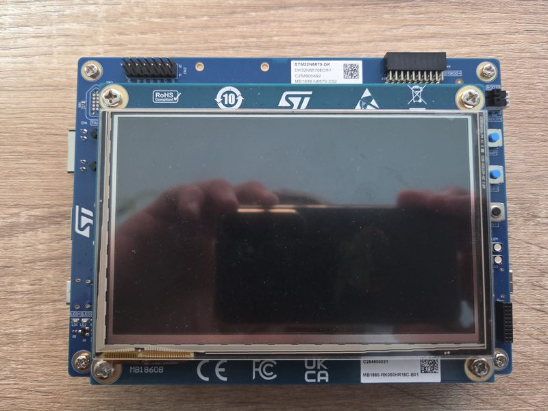
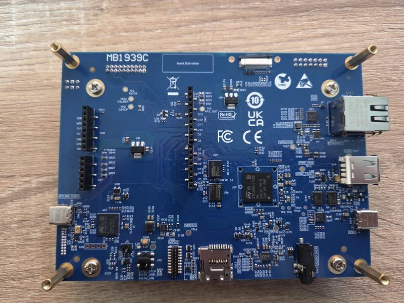

ST STM32N6570-DK

STM32N6570-DK Front

STM32N6570-DK Back
The STM32N6570-DK Discovery kit is based on the STM32N657X0H3Q Arm Cortex-M55 microcontroller.
Loading and running
Use SRAM loading for routine debugging and external flash for persistent boot, reset testing and standalone operation. The console is the ST-LINK Virtual COM Port at 115200 8N1.
Persistent flash
OpenOCD adds the STM32N6 ROM header to nuttx.bin and programs the
on-board NOR flash with its stmqspi driver. Use an OpenOCD version
that provides target/stm32n6x.cfg.
Build and program the persistent boot image with:
$ make flash
This erases the affected flash sectors, programs and verifies the image,
and resets the board. OPENOCD and OPENOCD_TARGET can override the
OpenOCD executable and target script. The board’s scripts/flash.cfg
configures the NOR pins, clocks and geometry for the native flash driver.
For a CMake build configured in build:
$ cmake --build build --target flash
Both targets build nuttx.bin before flashing. With CMake, OPENOCD
and OPENOCD_TARGET are cache variables set with -D at configuration.
The boot ROM loads NuttX from flash and starts it without a debugger or
separate FSBL.
The header and padding occupy the first 1 KiB at 0x34180000; NuttX is
linked at 0x34180400. The ROM download buffer limits the binary to
511 KiB. The generated image is unauthenticated and requires a device
that permits unauthenticated boot.
SRAM debugging
Build with make or cmake --build build. Start OpenOCD using its
standard ST-LINK and STM32N6 scripts:
$ openocd -f interface/stlink.cfg -c 'transport select swd' \
-f target/stm32n6x.cfg -c 'reset_config srst_only srst_nogate'
In another terminal, open the ELF with GDB. Use build/nuttx instead of
nuttx for CMake:
$ arm-none-eabi-gdb nuttx
(gdb) target extended-remote :3333
(gdb) monitor reset halt
(gdb) load
(gdb) set $msp = *(unsigned int *)0x34180400
(gdb) set $pc = *(unsigned int *)0x34180404
(gdb) hbreak nx_start
(gdb) continue
load writes the ELF sections into SRAM without programming external
flash. The next two commands initialize the stack pointer and entry point
from the vector table. Continue again after reaching nx_start to run
NSH. Reset before each reload; resetting after load boots the image
stored in flash instead. The SRAM image is lost on power-off.
To inspect an already running image, attach with its matching ELF and omit the reset, load and register-setting commands.
NSH enables CONFIG_STM32N6_DEBUG to reopen debug access after ROM boot
and includes debug symbols. These debugging steps require an installed
image that enables debug access. Stop GDB and OpenOCD before running either
flash target.
RTC
The RTC runs from the 32.768 kHz LSE crystal and is registered as
/dev/rtc0 with two alarms. Set the time with date -s and test the
alarms with the alarm example, e.g. alarm 5 or alarm -a 1 5.
The time survives a reset; without a backup battery it is lost on power
off.
I2C
Bus |
Pins |
Devices |
|---|---|---|
I2C1 |
PH9, PC1 |
Camera module connector, Arduino D15/D14 |
I2C2 |
PD14, PD4 |
WM8904 codec (0x1a), GT911 touch (0x5d), TCPP03 |
I2C4 |
PE13, PE14 |
STMod+ connector |
The buses are registered as /dev/i2c1, /dev/i2c2 and /dev/i2c4
and can be explored with the i2c tool.
Serial ports
Port |
Device |
Pins |
Connection |
|---|---|---|---|
USART1 |
ttyS0 |
PE5 TX, PE6 RX |
ST-LINK VCP, console |
USART2 |
ttyS1 |
PD5 TX, PF6 RX, PG5 CTS, PG14 RTS |
STMod+ connector |
SPI
SPI5 is wired to the Arduino connector: PE15 SCK (D13), PH8 MISO (D12),
PG2 MOSI (D11) and PA3 as chip select (D10). It is registered as
/dev/spi5 and can be exercised with the spi tool; shorting D11
to D12 loops the transmitted bytes back.
Ethernet
The RJ45 port is driven by a Realtek RTL8211F gigabit PHY at MDIO address 1,
connected to ETH1 over RGMII: PD1 MDC, PD12 MDIO, PF0 GTX_CLK, PF2 CLK125,
PF7 RX_CLK, PF10 RX_CTL, PF14/PF15/PF8/PF9 RXD0-3, PF11 TX_CTL and
PF12/PF13/PG3/PG4 TXD0-3. The PHY is managed by PHYLIB with its RTL8211F
driver, which adds the RGMII clock delays (PHY_INTERFACE_RGMII_ID), and
its 125 MHz CLK125 output clocks the MAC. The MAC address is derived from the unique
device ID. The interface is eth0; check it with ifconfig and
ping, and read the PHY registers with mdio.
LCD
The 5” 800x480 Rocktech RK050HR18 panel is driven by the LTDC (RGB888
output, pins in board.h) and registered as /dev/fb0. The 25 MHz
pixel clock is IC16 (PLL1 / 96). PQ3 enables the panel, PQ6 the backlight
and PE1 is the shared panel/touch reset. Layer 1 is RGB565 and its
framebuffer is placed in AXISRAM1/2 at 0x34080000 (768000 bytes), below
the image, so the heap is not affected. Run fb to draw the test
pattern.
The GT911 touch controller on I2C2 (interrupt on PQ4) is reset at bring-up
with PQ4 held low, which selects address 0x5d, and registered as
/dev/input0; tc prints the touch coordinates.
Camera module
The MB1854 module (Sony IMX335) is on the CSI-2 host (two lanes) and I2C1
(0x1a). PD2 enables the module and PC8 releases the sensor reset. The
DCMIPP converts the raw frames to RGB565 and scales them, with automatic
exposure (CONFIG_STM32_DCMIPP_AE) and white balance
(CONFIG_STM32_DCMIPP_AWB), switched off with V4L2_CID_EXPOSURE_AUTO
and V4L2_CID_AUTO_WHITE_BALANCE.
Time-of-flight sensor
The VL53L5CX on the camera module (MB1854) is on I2C1 at 0x29, with INT on
PQ0 and LPn on PQ5. The board powers the module through PD2 with the
IMX335 held in reset (PC8) and registers the sensor as the V4L2 depth
camera /dev/video1 (Z16, 8x8 or 4x4). INT uses EXTI0, so the TAMP
button has no interrupt when the sensor is enabled.
microSD
The microSD slot is on SDMMC2 (4-bit, IDMA): PC2 CK, PC3 CMD, PC4-PC5 D0-D1,
PC0 D2, PE4 D3 (AF11), card detect PN12 (low with a card) and card power
enable PQ7 (high). The kernel clock is IC4 = 200 MHz, giving 400 kHz for
identification and 25 MHz for transfers. The card is /dev/mmcsd0;
insertion and removal are reported through the card detect interrupt.
With a FAT formatted card:
nsh> mount -t vfat /dev/mmcsd0 /mnt
nsh> echo hello > /mnt/test.txt
nsh> cat /mnt/test.txt
nsh> dd if=/dev/zero of=/mnt/big.bin bs=4096 count=256
nsh> umount /mnt
USB host
The host runs at full speed on the embedded PHY (24 MHz reference, HSE / 2)
of the port selected with CONFIG_STM32N6_OTGHS_USB1/USB2:
USB2 (default in
jumbo): the Type-A connector, VBUS switched by PB9.USB1: the Type-C connector (CN18). VBUS comes from the TCPP03: PA4 enables it and the host driver closes its provider switch over I2C2 (0x34). The CC lines are not driven. Not tested on hardware.
VBUS of a flash drive can exceed what the ST-LINK USB port supplies: power
the board from CN18 when using the Type-A port. A FAT formatted flash
drive is /dev/sda:
nsh> mount -t vfat /dev/sda /mnt
nsh> ls /mnt
nsh> echo hello > /mnt/test.txt
nsh> umount /mnt
Clocking
By default the CPU runs at 800 MHz and the system buses at 400 MHz. PLL1 is fed from the 48 MHz HSE crystal, HCLK and the APB clocks run at 200 MHz and the timer kernel clock is 200 MHz. 800 MHz requires the VOS high voltage range, so the board SMPS is switched to its overdrive output through PF4 before the PLL is started. PLL2, PLL3 and PLL4 are started for the peripheral kernel clocks.
CONFIG_STM32N6570_DK_CLOCK_HSI selects a conservative tree instead: PLL1
from the internal 64 MHz HSI, CPU 200 MHz, SYSCLK 100 MHz and VOS low. The
console USART1 is clocked from HSI in both cases.
Configurations
nsh
NuttShell with the user LEDs, the USER1 button, GPDMA1 and the RTC enabled.
netnsh
The nsh configuration with Ethernet: IPv4, TCP, UDP, ICMP, a DHCP
client started by NSH, ping, telnetd and mdio. The link is
auto-negotiated up to 1000 Mbps when eth0 comes up.
fb
nsh plus the LCD framebuffer /dev/fb0 and the fb example, which
draws nested coloured rectangles on the panel.
lvgl
fb plus the touch controller, LVGL and its widgets demo. Start it
with lvgldemo &. The image is close to the 511 KiB limit of the boot
ROM, so LVGL logging and extra fonts are left out.
camera
fb plus the IMX335 camera and the camera example, see Camera module.
camera 0 shows a 320x240 preview on the LCD.
jumbo
netnsh plus the microSD slot, the USB host on the USB2 Type-A
connector, USB mass storage, FAT and the L1 caches. Features that do not
conflict with each other are added here instead of to new configurations.